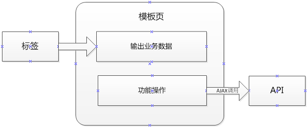

1、概述
Javashop模板制作需要用到标签、api调用，在一些复杂的模板中还可能会用到url映射。
我们以购物车页面为例介绍，购物车页面的样子可能如下所示：
我们首先会用标签输出上述列表的数据，而对于删除和更改数量的功能性操作，我们通过异步调用核心的api来完成，我们使用删除购物车api操作为例，如删除购物车一项的api地址为：/api/shop/cart!delete.do?cartid=1
调用上述地址会返回一个json串{“result”:1,”message”:”删除成功”}对于这些API详细请参见《Javashop API文档》

2、标签使用详解
我们以输出上述购物车列表为例来调用标签输出数据：
首先我们在当前模板文件夹中建立一个模板文件，如名为："cart.html"，然后在此页面中输入如下代码：
<#-- 创建购物车标签-->
<#assign cartTag= newTag("cartTag")>
<#--通过购物车标签获取购物项列表 -->
<#assign itemList = cartTag()>
<div class="cart-wrap">
<#if (itemList?size>0)>
<!--循环输出商品列表-->
<li>
<h6>${item.name}</h6>
<h6>${item.num}</h6
<h6><a href="javascript" itemid=" ${item.id}" class="del">删除</a></h6>
</li>
</#list>
<#else>
<h6>购物车没有商品！</h6>
</#if>
</div>
然后打开浏览器在地址栏中输入：/cart.html就可以看到效果了。（和v3.2不同的是去掉了uri的建立，不用再关心widget.xml，新建模板文件直接就访问就可以）
我们来解释一下标签的使用，首先是标签的创建：
<#assign cartTag= newTag("cartTag")>
assign这个关键字是Freemarker定义的，用来在模板中声明一个变量，
cartTag是声明的变量名，
newTag("cartTag")创建了一个购物车标签，并将引用赋值给了cartTag变量，
而下面这行代码是调用了刚刚创建的cartTag标签：
<#assign itemList = cartTag()>
调用这个标标签会得到购物车的列表，上述代码把他赋值给itemList变量。这样我们就可以通过#list 指令来循环这个列表了。
Javashop标签的返回值请参见：《Javashop标签文档》
小提示
在页面中可以直接获取在地址栏和form中传递的参数哦，如：/test.html?name=wf
那么在页面中直接通过${name}就可以输出地址栏中定义的name参数。同样的地，form表单中的参数通过上述方法可以一直获取、输出。
3、API的调用
我们还以上述购物车的删除操作为例，调用购物车删除api代码如下：
$(".cart-wrap .del").click(function(){
//得到cart id
var itemid = $(this).attr("itemid");
$.ajax({
url:"/api/shop/cart!delete.do",
data:"cartid="+itemid,
dataType:"json",
success:function(result){
if(result.result==1){
alert("删除成功");
}else{
$.alert(result.message);
}
$.Loading.hide();
},
error:function(){
$.alert("出错了:(");
}
});
});
上述的api是通过访问一个url:/api/shop/cart!delete.do来调用的，调用结果是json格式，如：{“result”:1,”message”:”删除成功”}。对于这些API详细请参见《Javashop核心API详解》
4、模板制作高级篇
4-1、定义url-模板映射
可能会有一些特殊的模板，如商品详细页，他的访问地址一般为：goods-1.html其中的1表示这个商品的标识id,通过这个id我们的商品详细标签才能由数据库中查询出此商品的数据，但我们有很多商品，不可能建立goods-1.html,goods-2.html...goods-1000.html，这么多模板，此时我们就要用到uri-模板映射，是通过正则表达式来完成的，如：我们建立如下的映射：
/goods-(\d+).html -> /goods.html那么访问所有的/goods-{数字}.html 这样的地址都会解析goods.html这个模板了。
5、标签开发指南篇
5-1、基本知识
首先要继承于com.enation.framework.taglib.BaseFreeMarkerTag然后实现这个类的exec方法，如：
@Component
public class TestTag extends BaseFreeMarkerTag {
@Override
protected Object exec(Mapparams) throws TemplateModelException{
return"这是一个测试";
}
}
其中@Component是spring的注解，这样此类就会自动被spring扫描,并在spring容器中创建此类的实例，此实例的beanid为testTag，就是类名首字母小写。
当然也可以通过如下方式指定beanid：
@Component("myTestTag")
这个beanid就是标签的标识，也就是在模板页中如下红色的部分：
<#assign cartTag= newTag("cartTag")>
标签的exec方法会在标签调用的时候被调用，也是就在模板中：
<#assign itemList = cartTag() >
这段代码会执行标签的exec方法。这个方法的返回值就是返回给页面的变量，如上述的itemList，可以反回任何值，字串、数字，List。。。都可以。
在我们示例中返回了字串，现在可以在页面中输入如下代码：
<#assign testTag= newTag("testTag")>
<#assign myValue = testTag()>
返回值是:${myValue}
那么页面会输出exec方法返回的变量。
5-2、参数的传递
exec方法中的Map params参数存储了由页面中传递过来的变量，如：
<#assign testTag= newTag("testTag")>
<#assign myValue = testTag ("{'catid':1}") >
像上面标红的示例一样，参数是通过json的格式传递的，那么在标签类中获取参数值如下:
protected Object exec(Mapparams) throws TemplateModelException {
Integer catid = (Integer)params.get("catid");
return"这是一个测试,catid是"+catid;
}
参数的名字(catid),就是map参数的key,值得注意的是参数值的数据类型，上述例子的json串：{'catid':1},catid值就是Integer型，所以没有加引号，第二个例子就是String型：{'catid': '1'}，所以要加引号。
小提示
1、javashop中的标签都已自动纳入spring的容器管理，所以在标签类中可以正常的注入使用spring的其它bean。
2、javashop为以下包名设置了spring的注解扫描： com.enation.app.base com.enation.app.shop com.enation.app.cms
3、如果在你的项目中需要扫描其它包名，请在spring配置文件中通过如下代码配置：
<!-- 定义此应用的组件扫描包 -->
<context:component-scanbase-package="com.enation.app.shop"/>
6、API开发指南
首先值得说明的是，上述所说的API和正常的struts2 Action没有丝毫区别。只不过访问路径必须是在/api/下，这个目径下不会被模板机制拦截，可以正常的由struts2响应。
6-1、示例
同样是要继承com.enation.framework.action.WWAction如：
@Component
@Scope("prototype")
@ParentPackage("eop_default")
@Namespace("/api/wine")
@Action("test")
public class TestApiAction extends WWAction {
public String delete(){
this.showSuccessJson("成功啦");
returnthis.JSON_MESSAGE;
}
}
其中的注解：
@Component同样是让spring自动扫描为 spring bean。
@Scope("prototype")生命bean的生命周期为prototype,这是为了多线程时的数据安全。
@Namespace("/api/wine")是这个是根据你的项目需要定义的namespace，这个决定了你的api访问路径
@Action("test")定义这个action的访问路径。
像上述示例的api，需要通过如下地址访问：/api/wine/test!delete.do这样就会调用delete方法，这个api的返回结果会是：
{"result":1,"message":"成功啦"}
返回的json串的规范对于我们意义重大，我们规定：
1、json串中必须含有结果值，我们规定用result来表示，1表示成功，0表示失败
2、json串的名称部分必须用双引号，字串值也必须用双引号（否则jquery1.4以后的版本不支持）
javashop提供了常用方法帮助大家生成json串，这些方法有：
基类WWAction中的方法：
1、showSuccessJson返回成功结果的字串，如：
this.showSuccessJson("成功啦");
返回：
{"result":1,"message":"成功啦"}
2、showErrorJson返回失败的字串，如：
this.showErrorJson("出错啦");
返回：
{"result":0,"message":"出错啦"}
如果我们需要返回更复杂的json串时该怎么办呢？
实际上我们是通过为WWAction基类的json属性赋值来实现向客户端返回字串的，比如调用this.showSuccessJson("成功啦")；实际是做了如下操作this.json=”{\"result\":1,\"message\":\"成功啦\"}”
如果需要返回更复杂的json串，那么构造好字串并赋值给json属性就可以了。
Javashop提供了com.enation.framework.util.JsonMessageUtil工具类来帮助生成json串，具体请参考此类。
小提示
1. javashop为以下包名设置了struts的注解扫描： com.enation.app.base.core.action com.enation.app.shop.core.action com.enation.app.cms.core.action 如果在你的项目中需要扫描其它包名，请在struts配置文件中通过如下代码配置：
<constantname="struts.convention.action.packages"value="com.enation.app.shop.core.action"/>